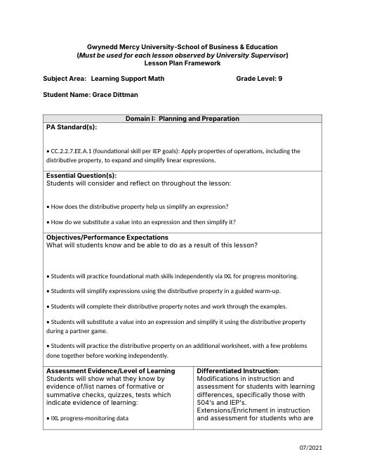

Grace Dittman
Student Teaching Portfolio
Block 2 Math
Block 3 Math
ESS
General Information
Lesson Plans
Student Teaching Journal
Résumé
Search
Home
›
Block 3 Math
›
Week 8
Week 8
Activities
· 8 files
Two-Step Equations & Combining Like Terms Quiz (revised)
2stepCLTQuiz.docx
Kuta Software worksheet
Distributive Property(1).pdf
third-party
Kuta Software worksheet
Distributive Property.pdf
third-party
Kuta Software worksheet
Distributive PropertyKEY.pdf
third-party
Distributive Property Warm-Up
Distributive Warm-Up.docx
Kuta Software worksheet
DistributiveProperty.pdf
third-party
Expanding Brackets (Distributive Law)
Green Minimalist Algebra Distributive Law Maths Worksheet.png
Roll & Simplify
RollandSimplify.pdf
third-party
Lesson Plans
· 4 files
Asynchronous Day Plan (PSAT day, all three classes)
Async Lesson Plans.docx
Quiz & Intro to the Distributive Property
B3_10-16_19LessonPlan.docx

Distributive Property & Substitution
B3_10-20_21LessonPlan.docx
Distributive Property & Variables on Both Sides
B3_10-23&26LessonPlan.docx
Notes
· 3 files
Distribute & Combine Notes
DistributeNotes.pdf
third-party
Variables on Both Sides Notes
Variables on Both Sides Notes.pdf
third-party
Variables on Both Sides Notes Key
VBSNotesKey.pdf
third-party
Slides
· 1 file
B3 Week 8 Slides
B3 Week 8 Slides.docx